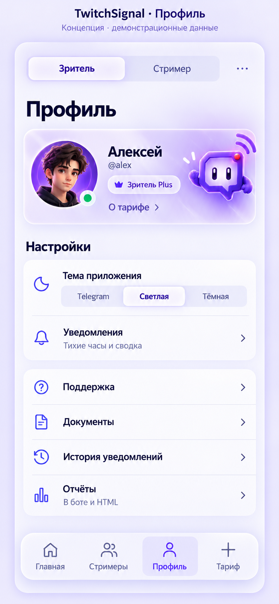

Главная и профиль · сверка с концептом
Слева — утверждённое направление. Справа — текущие компоненты на тестовых данных. Персонаж на прозрачном фоне; аватар и тариф берутся из реального аккаунта. Системная область Telegram проверяется отдельно на телефоне.
Главная · концептГлавная · текущая реализация Профиль · концепт
Профиль · концепт
Профиль · текущая реализация